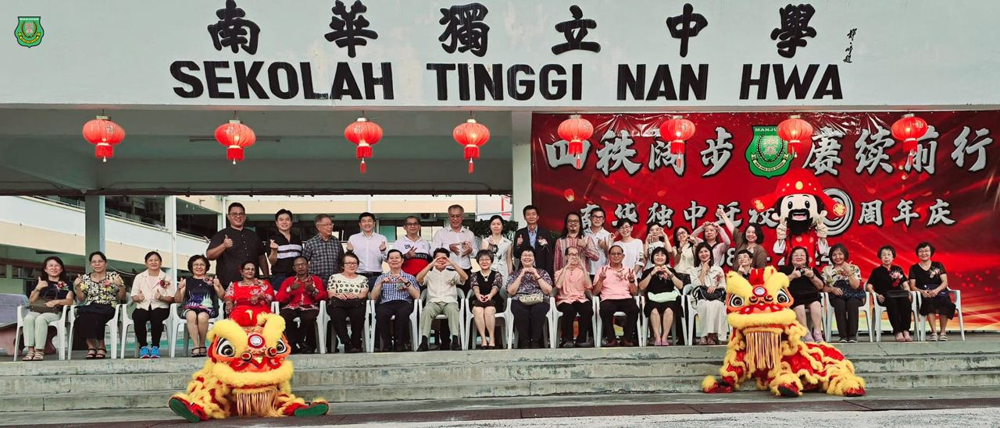
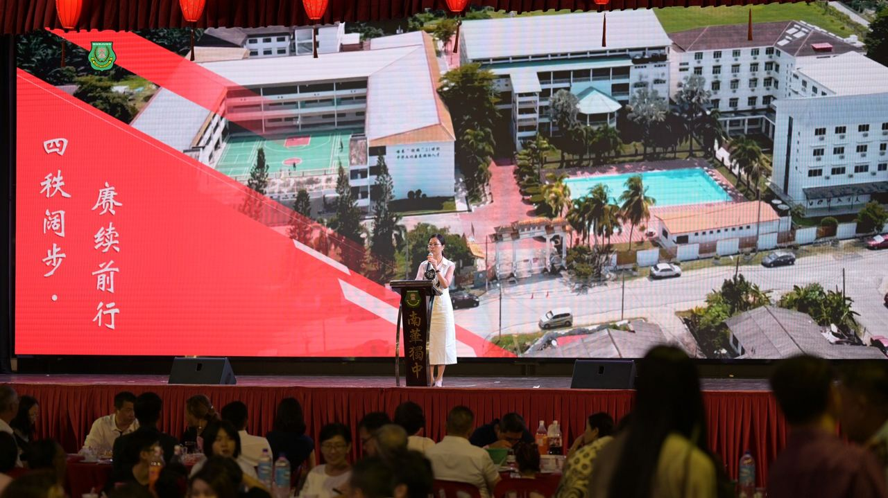
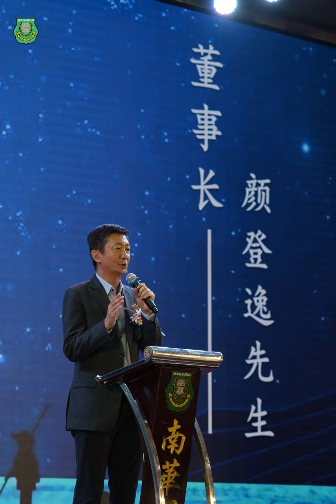
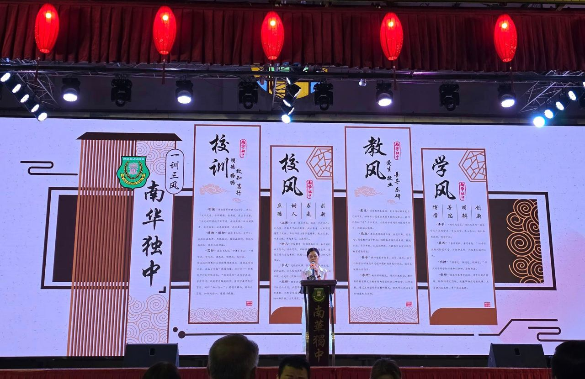
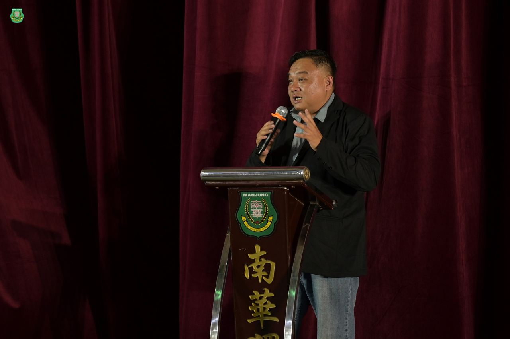
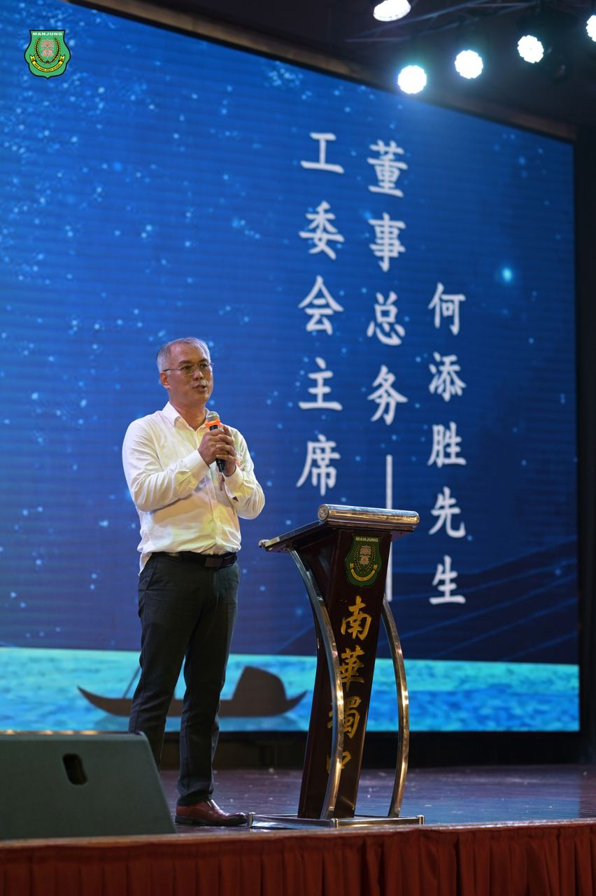
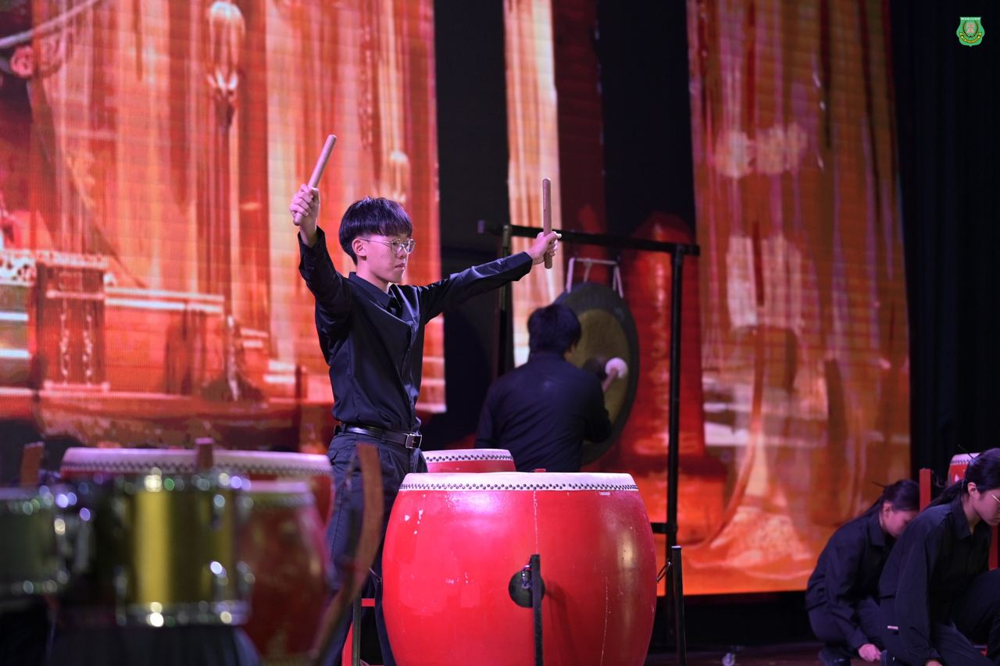

四秩阔步·赓续前行
四秩阔步·赓续前行
南华独中迁校40周年晚宴
退休老师与校友返校同庆
南华独中于日前隆重举行迁校40周年庆典晚宴，旨在回顾办校历程，展望未来发展，并凝聚社区群众力量。晚宴吸引了众多退休老师、校友、教师、学生及社区人士参与，场面热闹非凡。
晚宴上，精彩的文艺表演赢得了观众的阵阵掌声，充分展现了南华独中学生的多才多艺。此外，汇报南华独中校况、回顾迁校40周年历史、校友献唱以及向退休教师赠送学生亲手制作纪念品的环节都是本次庆典让人留下深刻印象的时刻，现场时而欢乐、时而温馨、甚至在回顾迁校历史时让外宾流下感动的泪水 。
本校董事长颜登逸先生在致辞中回顾了本校的发展历程，并表示南华独中十年前提出了"学会读书·学会做人"的办学方针，并庆幸在近年来逐步落实。本校秉持"培养'迎领'21世纪中华文化素养领袖人才"的办学愿景以及"明德·格物·致知·笃行"的校训，无不致力于培养具备领袖特质和国际视野的学生，以适应不断变化的全球环境。
本校校长陈丽冰博士在汇报校况中全面回顾了学校40年来的发展历程，从最初的艰难岁月到如今的蓬勃发展。她强调了学校在教育创新方面的努力，包括推出多元化的课程、实施《南华漫游》学习护照等举措。陈校长还介绍了学校未来的发展规划，包括关注人工智能在教育中的应用、加强与各源流学校和社区的合作，以及建设科技楼和现代化社区图书馆等计划，并呼吁“让我们以这段历史为起点，继续书写更加辉煌的未来。让我们同心同行，携手共育绽芬芳，共同书写更加灿烂的篇章”。
校友会主席林嵩胜先生在致辞中对学弟妹们寄予厚望，呼吁他们注重品格培养。他同时强调，南华独中不会放弃任何一位学生，并热情邀请校友们多回母校，积极参与学校的发展事业。
迁校40周年庆典工委会主席何添胜董事在致谢辞中深情缅怀了已故的老师们，同时感谢出席晚宴的退休教师。他特别感谢退休教师们多年来对学生的教育与呵护，使得许多校友如今已成为各领域的佼佼者。何董事强调学生应当时刻感恩学校的栽培，并表示相信南华独中的学生们未来必将为社会做出重要贡献。






